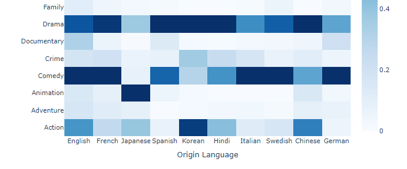
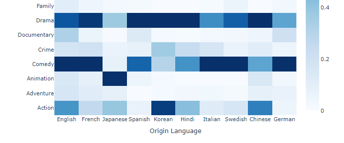
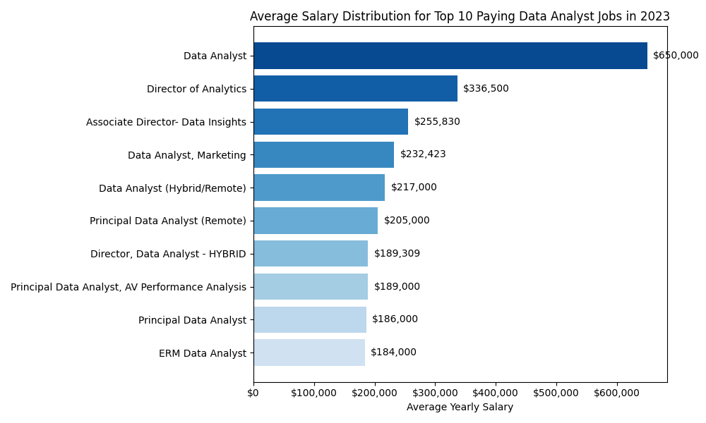
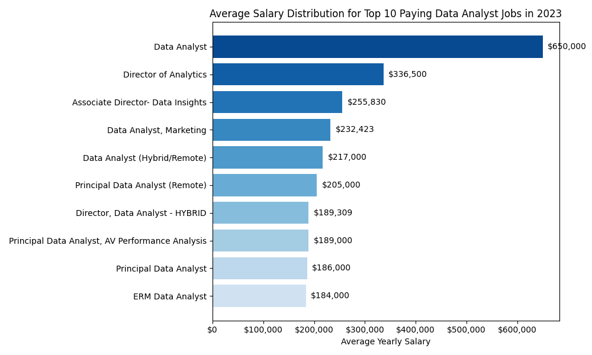

Web App - MovieMate
I made this movie web app from scratch using React, featuring a responsive mobile layout. It leverages a custom 50k movies database to offer advanced filtering, latest box office info, and upcoming releases.
Explore MovieMate
I made this movie web app from scratch using React, featuring a responsive mobile layout. It leverages a custom 50k movies database to offer advanced filtering, latest box office info, and upcoming releases.
Explore MovieMate 

This project analyzes Netflix movies, exploring trends and evolution across various metrics such as genres, countries, ratings, and more. Using data visualization techniques, I uncovered interesting insights into Netflix's content strategy and audience preferences.
Explore Medium Article

This dashboard was developed during my time as an FP&A Manager at a major event company. It uses synthetic data for confidentiality and shows how I structure financial data to support decision-making.
Explore Power BI Dashboard

In this project, I built a model to predict employee turnover. It highlights which factors impact whether someone stays or leaves, showcasing the use of data science in HR.
Explore Notebook

Using a public dataset on tech company layoffs, I cleaned the data and performed an analysis using SQL to uncover key insights.
Explore Notion Page
In this project, I forecast retail sales using real data, combining simple and advanced techniques (like machine learning) to improve accuracy. I break down the approach step by step, showing how to handle patterns over time and make reliable predictions for the future.
Explore Medium Article 

This project uses SQL queries to analyze the top paying remote Data Analyst jobs by salary, skills required, and demand in 2023, providing insights into the current job market.
Explore GitHub Repository

I created a comprehensive, daily-updated movies dataset that tracks industry trends, production strategies, and box office performance, showcasing my skills in large-scale data management.
Explore Kaggle Dataset

This Tableau visualization highlights Top 20 Box Office movies by genre and decade, comparing revenue and IMDb ratings to reveal key trends over time.
Explore Tableau Report

This Power BI report uses live box office data and IMDb ratings from my Movies Dataset to deliver various analysis, including box office trends, studio performance, and genre breakdowns, all presented through dynamic visuals.
Explore Power BI Dashboard

This analysis explores the filmography of A24 using my Movies Dataset to provide insights into the studio's unique characteristics.
Explore Notebook

I automated the daily refresh of my Ultimate Movies Dataset, ensuring it stays current with the latest updates and IMDB ratings for immediate analysis.
Explore Notebook

I developed a process to build the Ultimate Movies Dataset, detailing 1 million movies across 30 fields, refining it for maximum detail and efficiency.
Explore Notebook